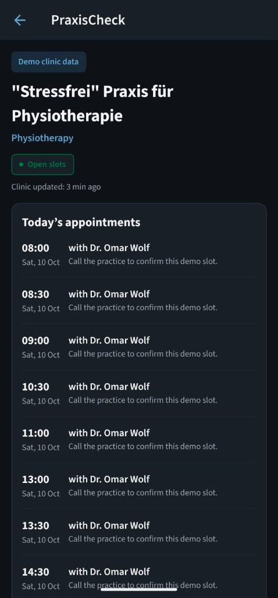
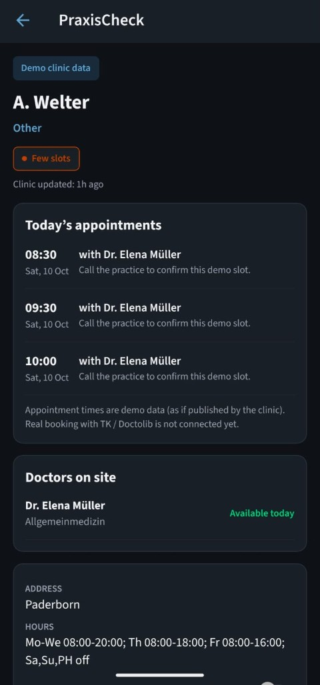
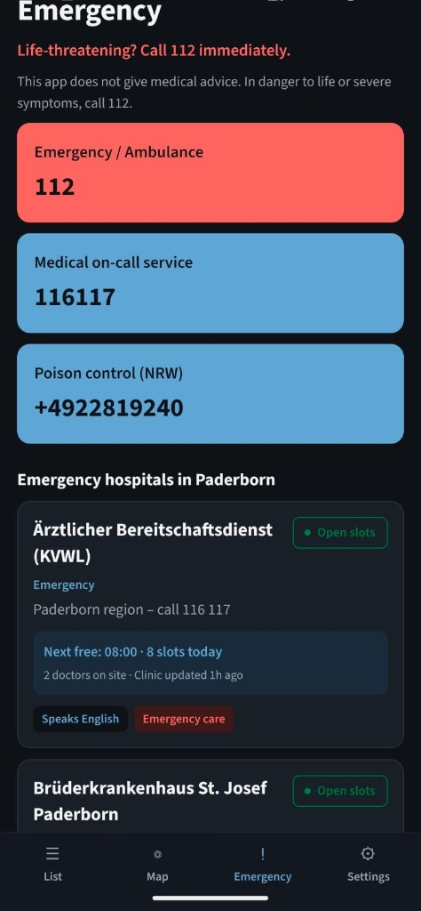

Mobile · Product · Expo
PraxisCheck Paderborn
Solo build — find doctors & open appointments in Paderborn
React Native app to search hundreds of local practices, filter by English-speaking staff, slots today, or emergency-only, and open a detail view with today’s appointment-style slots, doctors on site, and hours. A dedicated emergency tab surfaces 112 / 116117 and hospital contacts. English and German UI with light, dark, and system themes.
- List + map (OpenStreetMap), category chips, slot status (open / few / fully booked)
- Practice detail: next free time, slots today, clinic update time, call-to-confirm flow
- Android APK via Expo Application Services (EAS)




- Stack
- Expo 57, React Native, TypeScript, React Navigation, react-native-maps, i18n-js, AsyncStorage
- Skills
- Mobile product UX, healthcare-adjacent data presentation, localization, ship-to-device